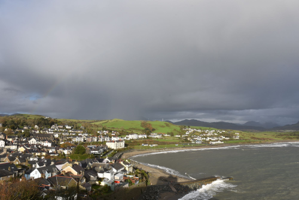
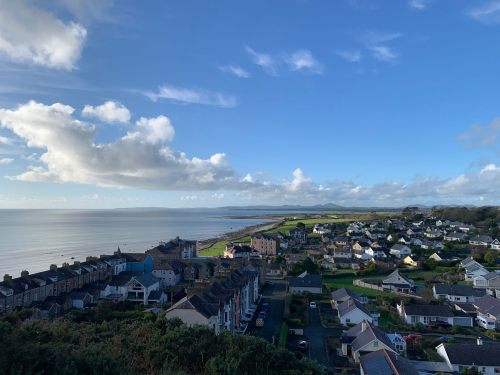
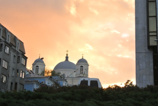
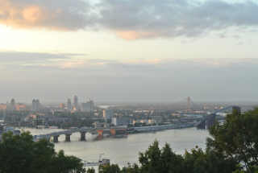
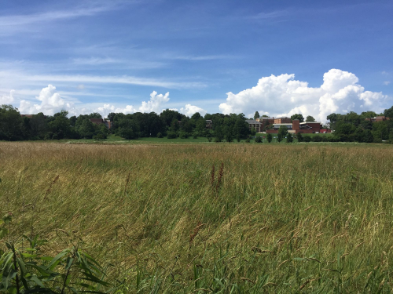
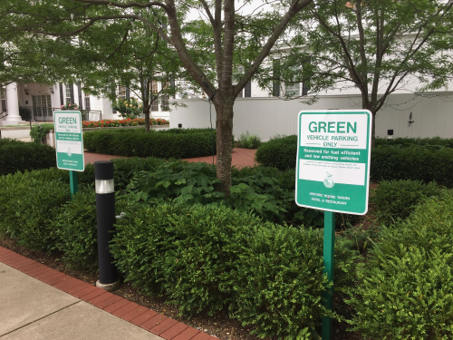
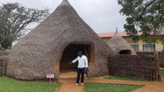
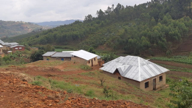
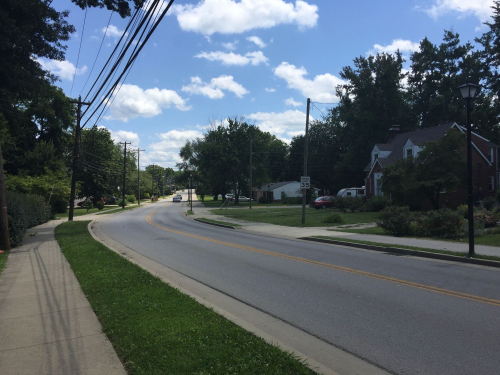
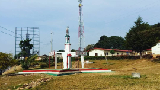

Kyiv, Ucrânia
Artista
Natalia Dolgushina, produtora de conteúdo
TRIPLETEN ART GALLERY
Uma jornada épica de Kentucky a Burundi pelo País de Gales e além

Imagem: um vilarejo costeiro ao pôr do sol
Todo mundo vem de algum lugar. Nosso projeto “De Pátria para Pátria” é uma galeria de fotos que conta as histórias de diversas pessoas, suas cidades e países natais.
Todos nós temos um lugar de onde viemos. Esses lugares são especiais e únicos porque são nossas terras de origem. Todos têm um certo apego ao lugar onde nasceram, e isso é normal. Nosso projeto é uma tentativa de criar uma galeria de fotos que conta histórias de pessoas, suas cidades e países natais.








Natalia Dolgushina, produtora de conteúdo
Kyiv, capital da Ucrânia, é uma grande cidade localizada às margens do rio Dnipro. Os verões são quentes, os invernos são frios, mas o outono e a primavera são absolutamente incríveis.
A cidade mistura arquitetura pré-revolução, pós-guerra e soviética. Na margem direita do Dnipro, a paisagem é mais íngreme; já a margem esquerda é considerada menos movimentada, mesmo por quem vive nos bairros mais distantes.
Steffan Warren, editor-chefe
Kseniya Glagoleva, gerente de projeto
A ruína medieval do Castelo de Criccieth observa a cidade a partir de uma rocha que se projeta sobre o mar. Acredita-se que o castelo tenha sido construído por Llewelyn, o Grande, no século XIII.
Muitos séculos depois, Criccieth se tornou um destino turístico popular no verão. A cidade é conhecida por suas paisagens costeiras, pelas flores espalhadas pelas ruas e pelo tradicional sorvete da região.
Travis Turner, autor e editor

Compre esta obra de arte como NFTBerea é uma pequena cidade localizada na região central de Kentucky. Ela é cercada por belas florestas e campos, e é conhecida como a capital do artesanato do estado.
Os visitantes encontram lojas de joias artesanais, velas, peças de madeira, galerias e estúdios de vidro. A cidade também abriga uma faculdade histórica que oferece bolsas integrais aos seus estudantes.
Grevisse Kenguruka, editor técnico

Compre esta obra de arte como NFTMuramvya é uma das províncias do Burundi. Durante a era do reino, foi a capital real e, por sua paisagem cultural e natural, passou a integrar a lista provisória de patrimônio mundial da UNESCO.
A região possui noites frias e dias agradáveis. O Monte Teza fica a mais de 2.600 metros de altitude e o clima da região favorece grandes plantações de chá e café, importantes para a economia do país.